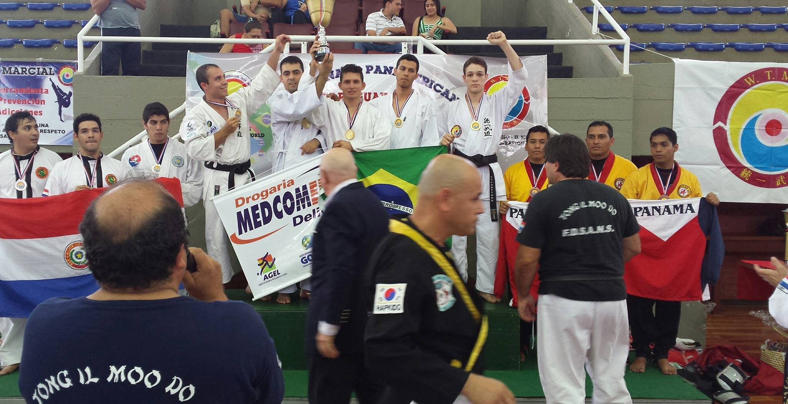
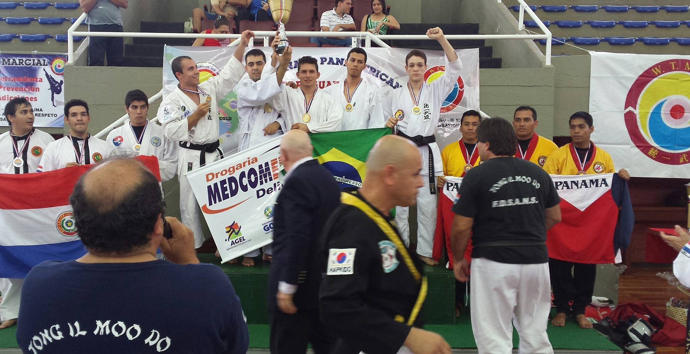

1-CAIO SAMUEL REIS MUNIZ 12/05/10

1-CAIO SAMUEL REIS MUNIZ 12/05/10
2- MATHEUS GABRIEL REIS MUNIZ 29/03/08
3- CARLOS EDUARDO XAVIER ABREU 28/07/04
4-JOÃO ANTÔNIO DE ANDRADE NETO 02/07/07
5- GABRIEL DE PAULA MELO 06/06/2008
6-JOÃO GABRIEL PEREIRA DOS SANTOS 20/09/07
7- JIPSON BERTO 25/01/07
8-ARTHUR DE SOUSA SALES 15/07/04
9-JOÃO PEDRO DE ARAUJO MORAIS 23/05/05
10-IGOR SOUZA ALVARENGA 07/09/03
11-RAIKE SOUZA ALVARENGA 14/11/08
12-RENATO LOPES 23/01/03
13-JHONATHAN DE PAULA PRADO 04/07/00
14-JORDANA DE PAULA PRADO 06/10/03
15-RELBERT WANDERSON ALVES DA SILVA 08/10/02
16-CARLOS EMANUEL RIBEIRO 19/01/04
17-ALLISON MENDONÇA DE ASSUNÇÃO 02/08/03
18-TEVEZ G. PEREIRA 31/01/04
19-LARISSA ROCHA DE SOUZA 23/03/96
20-DENIR GOMES PEREIRA DA SILVA FILHO 23/06/04
21-YURI PIETRO NASCIMENTO FREITAS 14/01/09
Delanos Dojô
22 - Kauane Barbosa santos 09/12/2003 marrom
23 - Andrey Barbosa santos 19/09/2005 marrom
24 - Camila Cristina carvalho 23/02/2008 verde
25 - Gabriel Henrique carvalho 12/04/2006 vermelho
26 - Michel Luís rocha Ferreira 31/10/2001 verde
27 - Marcos Antônio Laurindo cotrim 26/11999 vermelha
28 - Klallcio Gabriel Siqueira de Souza 15/12/2001 roxa
29 - Wallyson Rodrigues Soares oliveira 08/12/2005 vermelha
30 -Karen Gabrielle Siqueira vermelha
31 - Matheus Augusto de Paula Soares vermelha
32 - Eliabe Roriz Silva laranja
33 - Eduardo Fernandes Araujo verde
34 - Ricardo Fernandes amarela
35 - Gilberto Carvalho de Abreu branca
36 - Adriel allefy felix Marques preta 3 dam
37 - Lucimar de Jesus Marques preta 3 dam
38 - João batista preta 3 dam
39 - Ana clara Peixoto verde
40 - Isabella Cristina Peixoto Alves Marrom
41 - Luiza Eduarda Félix Cardoso de oliveira Amarela
42 - Maria Fernanda feliz Cardoso de oliveira Amarela
43 - João Félix Cardoso de oliveira verde
44 - Pedro Henrique Cardoso de Oliveira vermelha
45 - Wanderson Moreira de Sousa 01/03/2006 vermelha
46 - Heloa carvalho de oliveira 07/10/2006 Vermelha
47 – Heloa Carvalho de Oliveira 07/10/2006 Vermelha
48 – Gabriel Vinicios Dias Nascimento Laranja
49 – Ana Beatriz da Silva Verde
50 – Eduardo Nathan dos Santos Pereira Amarela
51 – Iuri Luis Rocha Ferreira Verde 21/06/2000
SOCHIN KAN
52 - PAULO ARTHUR LOPES RODRIGUES Vermelha
53 - ÍTALO LEMES DO PRADO LARANJA
54 - DEIVIDI JUNIOR COSTA SILVA LARANJA
55 - AXEL JAMES SANTOS VERDE
56 - EDUARDO OLIVEIRA NEIVA ROXA
57 - RONAN ANTÔNIO GONÇALVES DOS SANTOS ROXA
58 - ALLEF ALVES OLIVEIRA ROXA
59 - Isadora ribeiro Araújo Branca 08 07.01.2009 35,00R$
60 - Renato almeida dos santos Branca 07 02.08.2009 35,00R$
61 - Danillo silva pereira Verde 10 08.03.2006 70,00R$
62 - Rebeca silva pereira/ NACIONAL+ ESTADUAL Amarela 07 04.11.2009 35;00R$
63 - Filipe pedroso Sousa silva Amarela 06 08.02.2010 35;00R$
64 - Vinicius Ferreira da cunha Marrom 14 15.06.2002 70;00R$
65 - Miguel B.P. Scalabrini Sousa VERMELHA 06 29.03.10 35;00R$
66 - Kaick breneer m. costa Marrom 12 08.05.2004 70,00R$
67 - Regiane França da costa Branca 37 16.11.1979 35,00R$
68 - Maria Elvira da silva Branca 44 06.12.1972 35,00R$
69 - Márcio Vinicius Souza Vaz Peres VERDE 13 04.07.2003 35,00R$
70 - Eduardo silva vieira Amarela 11 09.04.2005 35,00R$
71 - Tulio Gurgel Ferreira Verde 12 23.07.2004 70,00R$
72 - Claudinei dos santos Lopes Laranja 23 25.06.1993 70,00R$
73 - Carlos rodrigues de Vasconcelos Vermelho 42 22.08.1974 35,00R$
74 - Willian Azevedo Brandao Laranja 28 16.08.1988 70,00R$
75 - Talles Fernando l. Gomes Vermelha 12 03.03.2004 70,00R$
76 - Fernando Henrique palmeira solto Verde 22 23.01.1995 70,00R$
77 - Kleber Gustavo da silva Preta 20 07/07/1996 35,00R$
78 - Lucas Antônio cunha torres Roxa 16 23/11/2000 70,00r$
79 - Renato rodrigues de oliveira Branca 12 27.08.2004 35,00R$
80 - Kelly dasmaceno dos santos Laranja 12 04.07.07 70,00R$
81 - Poliana oliveira dos santos Amarela 26 03.03.90 35,00R$
82 - Guilherme saraiva silva Branca 06 21/05/2010 35,00R$
83 - Vitor Henrique Rezende feliciano Amarela 16 05.07.2000 35,00R$
84 - Higor marques de oliveira Verde 22 27.05.94 35,00R$
85 - Wilson M.S neto Branca 15 01.02.2002 35,00RS
86 - Adao silverio Vermelha 10 02/10/2006 35,00RS
87 - Jalysson Ferreira/ NACIONAL+ESTADUAL Amarela 10 01/11/2006 35,00RS
88 - Jonersson Ferreira/ ESTADUAL+ NACIONAL Amarela 10 01/11/2006 35,00RS
89 - Marcos viniçius Amarela 10 12/08/2006 35,00RS
90 - Haniel vieira Amarela 10 13/06/2006 35,00RS
91 - Rayssa ingrid branca 10 13/03/2006 35,00RS
92 - Rayssa isabelly vermelha 10 08/02/2007 35,00RS
93 - Raiany barbosa branca 10 07/09/2006 35,00RS
94 - HAMILTON RODRIGUES DOS SANTOS 3°DAM 41 03/07/75 100,00RS
DOJO RODRIGUES
95 – Weserlei Rodrigues dos Santos 3º Dan
96 – Vinicius Rodrigues dos Reis 2º Dan
97 – Gabriel Yuri Silva de Oliveira 2º Dan
98 – Luiz Flavio Calo da Silva 1º Dan
99 – Gustavo de Freitas Lustosa Marrom
100 – Luiz Fernando Dias de Oliveira Marrom
101 – Adriane Teixeira Telez Marrom
102 – João Gabriel Moraes Guimarães Marrom
103 – Marcus D’avila C. Souza Roxa
104 – Luara da Silva Guimarães Roxa
105 – Letícia da Silva Guimarães Rxa
106 – Pedro Augusto Dias de Oliveira Verde
107 – João Vitor Gomes Teles Verde
DOJÔ COMBATE – SENSEI JEAN
108 - Eduardo araujo gomes Roxa
109 - Valmir bezerra da silva Amarela
110 - Arlindo Antônio dos santos .s.s neto Amarela
111 - Daiany menezes de melo santos Amarela
112 - Rafael Menezes de melo santos Verde
113 - Jean carlos dos santos Preta
114 - Dimas camelo nascimento Amarela
115 - Dhiego B Souza filho Amarela
FAFICH – GOIATUBA – CAMI - Roosevelt Leão Junior – Faixa Preta 1º Dan
Atletas Competidores até nível Estadual – Federação (faixas coloridas):
116 - André Luiz França da Silva: R$ 50,00 – Faixa Vermelha
117 - Gustavo Alexandre da Silva: R$ 50,00 – Faixa Vermelha
Atleta não competidor (Faixa Colorida):
118 - Geovana Gomes Andrelino Silva: R$ 35,00 – Faixa Vermelha
Atleta não competidor (Faixa Preta):
119 -Roosevelt Leão Júnior: R$ 70,00 – Faixa Preta 1º Dan
RAYKAN DOJÔ
120 - Lucas Moura Lima Preta 18 25/06/1998
121 - Eder Chaves Tavares Preta 20 2/10/1996
122 - Paulo Roberto Ferreira da Silva Preta 37 20/10/1980
123 - Eduardo Antônio Bandeira Nobre de Araújo Lima Marrom 18 03/03/1999
124 - Franklin Rabelo de Melo Amarela 27 14/03/1990
125 - Jhullya Kaylaine de Oliveira Veras Marrom 14 12/05/2002
126 - Tiago da Silva Santana Roxa 18 08/02/1999
DELANOS DOJÔ
Amarela
127 - GUILHERME CARVALHO CORREA
128 - Gusttawo Rickallye de Jesus Ferrejira
129 - Igor santos Espíndola RG:6752884
130 - Gustavo falone rocha 22/10/2009
Preta
131 - Lázaro divino de Abreu RG 463348
Verde
132 - Davi de Jesus
133 – Renato Cavalcante
134 – Sérgio Murilo Martins
SAMURAI DOJÔ
135 - Mateus de Oliveira Afonso Preta 4º Dan
136 - Aira de Pina Lima Amarela
137 - Nei Francisco de Lima Preta 1º Dan
138 - Guilherme Prestes Meotti Roxa
BUTOKU KAI
139 – Cleber de Souza Lopes Preta 1º Dan